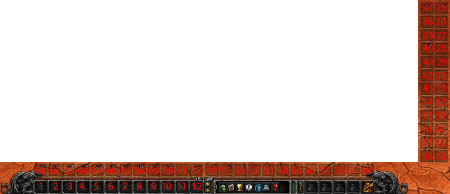

<!-- {"title": "UI and Macros"} -->
<div class="row">
  <div class="col-sm-12">
    <h1>UI and Macros</h1>

    <div class="card error fluid">
        <p>
          Keep in mind, that WoW Classic (1.13.*) uses the modern WoW client API!<br>
          Most Vanilla (1.12) macros/addons relying on scripted targeting or spell casting will not work!
        </p>
    </div>

    <h2>Addons</h2>

    <ul>
      <li>Must have addons: equipment manager, <a href="https://www.curseforge.com/wow/addons/mobinfo2" target="_blank">enemy health in percent</a>, some auction/mail addon</li>
      <li>Must have addons for PvE: threat meter, <a href="https://www.curseforge.com/wow/addons/big-wigs/files/2758049" target="_blank">boss mods</a>, Cthun warner</li>
      <li>Must have addons for PvP: <a href="https://www.curseforge.com/wow/addons/classiccastbars" target="_blank">enemy cast bar</a>, spell warner</li>
    </ul>

    <h2>Macros</h2>

<p>
  Start attack (1.13):
</p>
<pre>#showtooltip
/startattack
/cast Mortal Strike</pre>

<p>
  Start attack (1.12). You need to replace the number (72) with the <a href="#action-bar-slots">location of auto attack on your bars</a>:
</p>
<pre>/script if not IsCurrentAction(72) then UseAction(72) end;
/cast Mortal Strike
/cast Shield Slam
/cast Bloodthirst</pre>

<p>
  Charge/Intercept + Hamstring (1.13):
</p>
<pre>#showtooltip
/startattack
/cast [stance:1] Charge; [stance:3] Intercept
/cast Hamstring</pre>

<p>
  One button ranged (1.13):
</p>
<pre>/cast [worn:gun] Shoot Gun; [worn:crossbow] Shoot; [worn:bow] Shoot; Throw </pre>

<p>
  One button ranged (1.12):
</p>
<pre>/cast Shoot Gun
/cast Shoot Crossbow
/cast Shoot Bow
/cast Throw</pre>

<p>
  Weapon equip macros (2H, DW, 1H+Shield, slot 16 is MH, slot 17 is OH):
</p>
<pre>/stopcasting
/equip Bonereaver's Edge</pre>
<pre>/stopcasting
/equipslot 16 Tooth of Eranikus
/equipslot 17 Serathil</pre>
<pre>/stopcasting
/equipslot 16 Tooth of Eranikus
/equipslot 17 Aegis of Stormwind</pre>

<p>
  Use upper/lower trinket (1.13). This also works with other equipment slots and on-use items
  (1 head, 5 chest, 6 belt, 8 feet, 15 back, 17 offhand):
</p>
<pre>/use 13
/use 14</pre>

<p>
  Use upper/lower trinket (1.12):
</p>
<pre>/run UseInventoryItem(13);
/run UseInventoryItem(14);</pre>

<p>
  Reset instances:
</p>
<pre>/script ResetInstances()</pre>

<h3 id="action-bar-slots">Action bar slots</h3>

<a href="https://wowpedia.fandom.com/wiki/Action_slot">Textual form on wowpedia.</a>


<p>(Image source: unknown author, Feenix forums, Jan 2012 or older)</p>

    <div class="card error fluid" style="text-align: center;">
        <p style="font-size: calc(1rem * var(--heading-ratio) * var(--heading-ratio) * var(--heading-ratio));font-weight:500;color:white;">KEYBIND EVERYTHING!</p>
    </div>
  </div>
</div>

